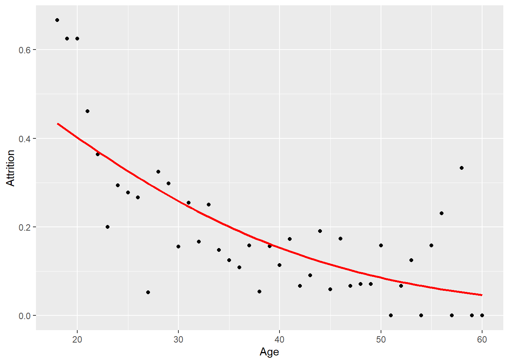
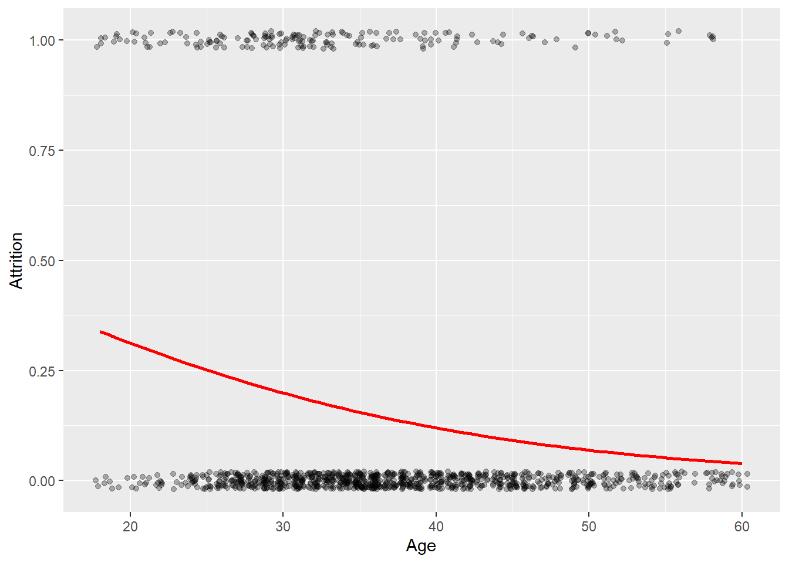
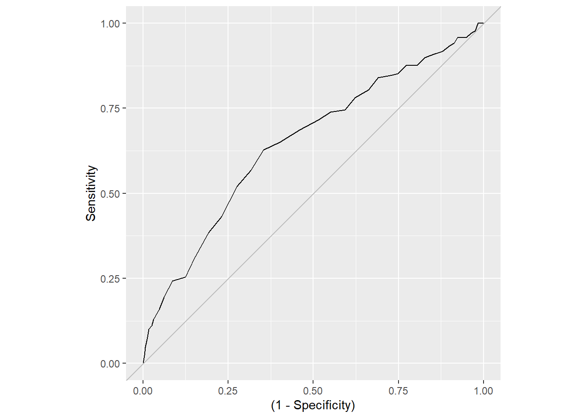
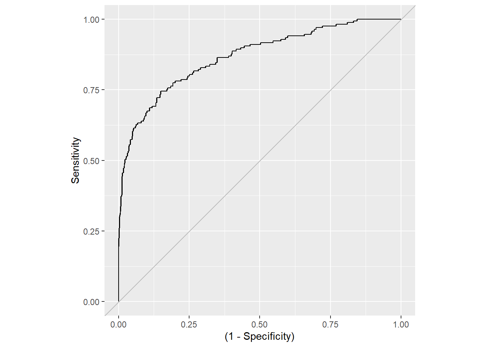
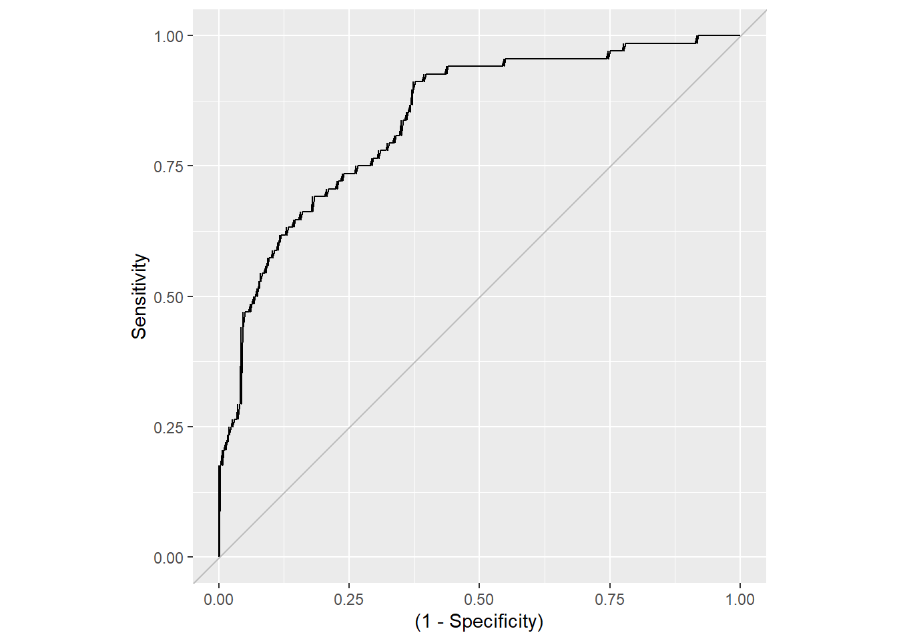
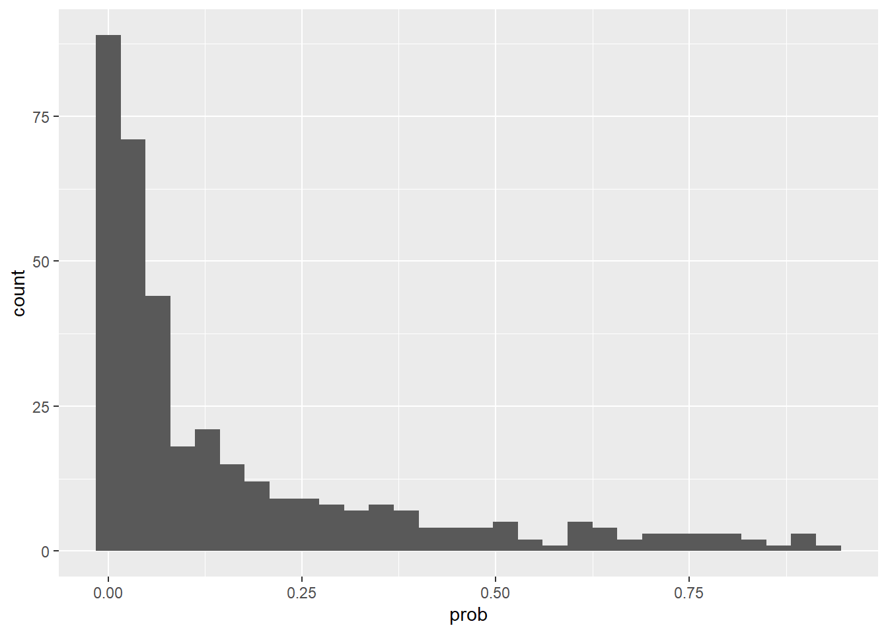

library(tidyverse) # datahåndtering, grafikk og glimpse()
library(skimr) # funksjonen skim() for å se på data
library(rsample) # for å dele data i training og testing
library(pROC) # Beregne ROC-curve
library(gtsummary) # Pent formatert regresjonstabell
library(caret) # Funksjonen confusionMatrix()3 Logistisk regresjon
I dette kapittelt skal vi bruke følgende pakker:
3.1 Empirisk eksempel
Som eksempel bruker vi et datasettet Attrition. Dette er et datasett over arbeidstakere i en bedrift der utfallsvariabelen er om arbeidstakeren slutter i jobben eller ikke.
For arbeidsgivere kan det være kostbart med endringer i staben. Arbeidstakere som slutter tar med seg erfaring og kompetanse, og nye arbeidstakere må læres opp. Arbeidsgiver bør derfor generelt legge til rette for at arbeidstakere ønsker å bli værende, men det kan også være aktuelt med mer målrettede tiltak. Når en arbeidstaker har fått et nytt jobbtilbud kan det være for sent. Hvis man derimot kan komme i forkjøpet kan man kanskje gjøre noe før vedkommende går til det skrittet å søke ny jobb. Hvis man kunne predikere hvem som kommer til å slutte kunne man altså gjort tiltak i forkant.1
Først leser vi inn datasettet og evt. laster pakker i trenger. Dataene er i csv-format så vi leser inn med readRDS(). Deretter kan vi se på innholdet med skim():
attrition <- readRDS("data/attrition.rds")
skim(attrition) | Name | attrition |
| Number of rows | 1470 |
| Number of columns | 32 |
| _______________________ | |
| Column type frequency: | |
| factor | 8 |
| numeric | 24 |
| ________________________ | |
| Group variables | None |
Variable type: factor
| skim_variable | n_missing | complete_rate | ordered | n_unique | top_counts |
|---|---|---|---|---|---|
| Attrition | 0 | 1 | FALSE | 2 | No: 1233, Yes: 237 |
| BusinessTravel | 0 | 1 | FALSE | 3 | Tra: 1043, Tra: 277, Non: 150 |
| Department | 0 | 1 | FALSE | 3 | Res: 961, Sal: 446, Hum: 63 |
| EducationField | 0 | 1 | FALSE | 6 | Lif: 606, Med: 464, Mar: 159, Tec: 132 |
| Gender | 0 | 1 | FALSE | 2 | Mal: 882, Fem: 588 |
| JobRole | 0 | 1 | FALSE | 9 | Sal: 326, Res: 292, Lab: 259, Man: 145 |
| MaritalStatus | 0 | 1 | FALSE | 3 | Mar: 673, Sin: 470, Div: 327 |
| OverTime | 0 | 1 | FALSE | 2 | No: 1054, Yes: 416 |
Variable type: numeric
| skim_variable | n_missing | complete_rate | mean | sd | p0 | p25 | p50 | p75 | p100 | hist |
|---|---|---|---|---|---|---|---|---|---|---|
| Age | 0 | 1 | 36.92 | 9.14 | 18 | 30.00 | 36.0 | 43.00 | 60 | ▂▇▇▃▂ |
| DailyRate | 0 | 1 | 802.49 | 403.51 | 102 | 465.00 | 802.0 | 1157.00 | 1499 | ▇▇▇▇▇ |
| DistanceFromHome | 0 | 1 | 9.19 | 8.11 | 1 | 2.00 | 7.0 | 14.00 | 29 | ▇▅▂▂▂ |
| Education | 0 | 1 | 2.91 | 1.02 | 1 | 2.00 | 3.0 | 4.00 | 5 | ▂▃▇▆▁ |
| EmployeeNumber | 0 | 1 | 1024.87 | 602.02 | 1 | 491.25 | 1020.5 | 1555.75 | 2068 | ▇▇▇▇▇ |
| EnvironmentSatisfaction | 0 | 1 | 2.72 | 1.09 | 1 | 2.00 | 3.0 | 4.00 | 4 | ▅▅▁▇▇ |
| HourlyRate | 0 | 1 | 65.89 | 20.33 | 30 | 48.00 | 66.0 | 83.75 | 100 | ▇▇▇▇▇ |
| JobInvolvement | 0 | 1 | 2.73 | 0.71 | 1 | 2.00 | 3.0 | 3.00 | 4 | ▁▃▁▇▁ |
| JobLevel | 0 | 1 | 2.06 | 1.11 | 1 | 1.00 | 2.0 | 3.00 | 5 | ▇▇▃▂▁ |
| JobSatisfaction | 0 | 1 | 2.73 | 1.10 | 1 | 2.00 | 3.0 | 4.00 | 4 | ▅▅▁▇▇ |
| MonthlyIncome | 0 | 1 | 6502.93 | 4707.96 | 1009 | 2911.00 | 4919.0 | 8379.00 | 19999 | ▇▅▂▁▂ |
| MonthlyRate | 0 | 1 | 14313.10 | 7117.79 | 2094 | 8047.00 | 14235.5 | 20461.50 | 26999 | ▇▇▇▇▇ |
| NumCompaniesWorked | 0 | 1 | 2.69 | 2.50 | 0 | 1.00 | 2.0 | 4.00 | 9 | ▇▃▂▂▁ |
| PercentSalaryHike | 0 | 1 | 15.21 | 3.66 | 11 | 12.00 | 14.0 | 18.00 | 25 | ▇▅▃▂▁ |
| PerformanceRating | 0 | 1 | 3.15 | 0.36 | 3 | 3.00 | 3.0 | 3.00 | 4 | ▇▁▁▁▂ |
| RelationshipSatisfaction | 0 | 1 | 2.71 | 1.08 | 1 | 2.00 | 3.0 | 4.00 | 4 | ▅▅▁▇▇ |
| StockOptionLevel | 0 | 1 | 0.79 | 0.85 | 0 | 0.00 | 1.0 | 1.00 | 3 | ▇▇▁▂▁ |
| TotalWorkingYears | 0 | 1 | 11.28 | 7.78 | 0 | 6.00 | 10.0 | 15.00 | 40 | ▇▇▂▁▁ |
| TrainingTimesLastYear | 0 | 1 | 2.80 | 1.29 | 0 | 2.00 | 3.0 | 3.00 | 6 | ▂▇▇▂▃ |
| WorkLifeBalance | 0 | 1 | 2.76 | 0.71 | 1 | 2.00 | 3.0 | 3.00 | 4 | ▁▃▁▇▂ |
| YearsAtCompany | 0 | 1 | 7.01 | 6.13 | 0 | 3.00 | 5.0 | 9.00 | 40 | ▇▂▁▁▁ |
| YearsInCurrentRole | 0 | 1 | 4.23 | 3.62 | 0 | 2.00 | 3.0 | 7.00 | 18 | ▇▃▂▁▁ |
| YearsSinceLastPromotion | 0 | 1 | 2.19 | 3.22 | 0 | 0.00 | 1.0 | 3.00 | 15 | ▇▁▁▁▁ |
| YearsWithCurrManager | 0 | 1 | 4.12 | 3.57 | 0 | 2.00 | 3.0 | 7.00 | 17 | ▇▂▅▁▁ |
Merk at det er en variabel vi helt sikkert ikke trenger, så vi sletter denne like gjerne med en gang: EmployeeNumber er et løpenummer for person. Siden det er et 1:1 forhold mellom dette og utfallsvariabelen, så bør den tas ut.
Bruker select() med minustegn for variable vi vil fjerne. Her overskrives datasettet med det modifiserte datasettet
attrition <- attrition %>%
select(- EmployeeNumber)
glimpse(attrition)Rows: 1,470
Columns: 31
$ Age <int> 41, 49, 37, 33, 27, 32, 59, 30, 38, 36, 35, 2…
$ Attrition <fct> Yes, No, Yes, No, No, No, No, No, No, No, No,…
$ BusinessTravel <fct> Travel_Rarely, Travel_Frequently, Travel_Rare…
$ DailyRate <int> 1102, 279, 1373, 1392, 591, 1005, 1324, 1358,…
$ Department <fct> Sales, Research & Development, Research & Dev…
$ DistanceFromHome <int> 1, 8, 2, 3, 2, 2, 3, 24, 23, 27, 16, 15, 26, …
$ Education <int> 2, 1, 2, 4, 1, 2, 3, 1, 3, 3, 3, 2, 1, 2, 3, …
$ EducationField <fct> Life Sciences, Life Sciences, Other, Life Sci…
$ EnvironmentSatisfaction <int> 2, 3, 4, 4, 1, 4, 3, 4, 4, 3, 1, 4, 1, 2, 3, …
$ Gender <fct> Female, Male, Male, Female, Male, Male, Femal…
$ HourlyRate <int> 94, 61, 92, 56, 40, 79, 81, 67, 44, 94, 84, 4…
$ JobInvolvement <int> 3, 2, 2, 3, 3, 3, 4, 3, 2, 3, 4, 2, 3, 3, 2, …
$ JobLevel <int> 2, 2, 1, 1, 1, 1, 1, 1, 3, 2, 1, 2, 1, 1, 1, …
$ JobRole <fct> Sales Executive, Research Scientist, Laborato…
$ JobSatisfaction <int> 4, 2, 3, 3, 2, 4, 1, 3, 3, 3, 2, 3, 3, 4, 3, …
$ MaritalStatus <fct> Single, Married, Single, Married, Married, Si…
$ MonthlyIncome <int> 5993, 5130, 2090, 2909, 3468, 3068, 2670, 269…
$ MonthlyRate <int> 19479, 24907, 2396, 23159, 16632, 11864, 9964…
$ NumCompaniesWorked <int> 8, 1, 6, 1, 9, 0, 4, 1, 0, 6, 0, 0, 1, 0, 5, …
$ OverTime <fct> Yes, No, Yes, Yes, No, No, Yes, No, No, No, N…
$ PercentSalaryHike <int> 11, 23, 15, 11, 12, 13, 20, 22, 21, 13, 13, 1…
$ PerformanceRating <int> 3, 4, 3, 3, 3, 3, 4, 4, 4, 3, 3, 3, 3, 3, 3, …
$ RelationshipSatisfaction <int> 1, 4, 2, 3, 4, 3, 1, 2, 2, 2, 3, 4, 4, 3, 2, …
$ StockOptionLevel <int> 0, 1, 0, 0, 1, 0, 3, 1, 0, 2, 1, 0, 1, 1, 0, …
$ TotalWorkingYears <int> 8, 10, 7, 8, 6, 8, 12, 1, 10, 17, 6, 10, 5, 3…
$ TrainingTimesLastYear <int> 0, 3, 3, 3, 3, 2, 3, 2, 2, 3, 5, 3, 1, 2, 4, …
$ WorkLifeBalance <int> 1, 3, 3, 3, 3, 2, 2, 3, 3, 2, 3, 3, 2, 3, 3, …
$ YearsAtCompany <int> 6, 10, 0, 8, 2, 7, 1, 1, 9, 7, 5, 9, 5, 2, 4,…
$ YearsInCurrentRole <int> 4, 7, 0, 7, 2, 7, 0, 0, 7, 7, 4, 5, 2, 2, 2, …
$ YearsSinceLastPromotion <int> 0, 1, 0, 3, 2, 3, 0, 0, 1, 7, 0, 0, 4, 1, 0, …
$ YearsWithCurrManager <int> 5, 7, 0, 0, 2, 6, 0, 0, 8, 7, 3, 8, 3, 2, 3, …Del datasettet i to deler. Vi trekker tilfeldig 70% og legger dette i datasettet training. Resten legges i testing. De nye datasettene behøver jo ikke hete akkurat dette. Kall det hva du vil.
set.seed(426)
attrition_split <- initial_split(attrition)
training <- training(attrition_split)
testing <- testing(attrition_split) Sjekk at antallet i hvert datasett summeres til totalen
nrow(attrition) [1] 1470nrow(training) [1] 1102nrow(testing) [1] 368OBS! variabelen Attrition er en “factor”, dvs. kategorisk med underliggende nummer. Ta en titt.
str(training$Attrition) Factor w/ 2 levels "No","Yes": 1 2 1 2 1 1 1 2 1 1 ...head(training$Attrition) [1] No Yes No Yes No No
Levels: No Yeslevels(training$Attrition) [1] "No" "Yes"I en regresjon vil lm() og glm() håndtere en factor automatisk som dummy. Men det funker ikke nødvendigvis like greit for plotting etc. Gjør om factor til dummy-variabel. Inni parentesen er et logisk uttrykk som får TRUE/FALSE, men med å eksplisitt be om at variabelen skal være numerisk blir det 1/0 Vi overskriver variablen slik:
training$Attrition <- as.numeric(training$Attrition == "Yes")
head(training$Attrition) [1] 0 1 0 1 0 0Andelen kan vi få med mean():
mean(training$Attrition) [1] 0.1533575Vi kan vise hvordan det å slutte i jobben varierer med f.eks. alder ved å beregne andel per verdi av alder.
training_p <- training %>%
group_by(Age) %>%
summarise(Attrition = mean(Attrition == 1))
ggplot(training_p, aes(x=Age, y=Attrition))+
geom_point()
3.2 Estimere en sannsynlighet
Når utfallsvariabelen er binær (to verdier) kan man likevel bruke lineær regresjon. Det kalles da gjerne en lineær sannsynlighetsmodell.
lm_est <- lm(Attrition ~ Age , data = training)
summary(lm_est)
Call:
lm(formula = Attrition ~ Age, data = training)
Residuals:
Min 1Q Median 3Q Max
-0.28444 -0.18737 -0.14576 -0.06256 0.99292
Coefficients:
Estimate Std. Error t value Pr(>|t|)
(Intercept) 0.409254 0.044335 9.231 < 2e-16 ***
Age -0.006934 0.001166 -5.948 3.65e-09 ***
---
Signif. codes: 0 '***' 0.001 '**' 0.01 '*' 0.05 '.' 0.1 ' ' 1
Residual standard error: 0.355 on 1100 degrees of freedom
Multiple R-squared: 0.03116, Adjusted R-squared: 0.03027
F-statistic: 35.37 on 1 and 1100 DF, p-value: 3.652e-09Dette betyr at vi har estimert følgende regresjonsligning:
\[ \operatorname{\widehat{Attrition}} = 0.409 - 0.007(\operatorname{Age}) \]
Vi kan da predikere for ulike aldre ved å første lage et nytt datasett med kun alder som variabel og de verdiene som finnes i datasettet, og så bruke ‘predict()’ på dette datasettet etterpå. Da kan vi også se resultatet for ulike aldre. Her er et eksempel:
n_data <- data.frame(Age = seq(18, 65))
n_data$pred <- predict(lm_est, newdata = n_data)
ggplot(training_p, aes(x=Age, y=Attrition))+
geom_point()+
geom_line(data =n_data, aes(x = Age, y = pred))
Merk at det her er vist predikerte sannsynligheter litt utenfor omfanget av de opprinnelige dataene, dvs. opp til 65 år i stedet for bare til 60. Da får vi en negativ sannsynlighet. Dette er kanskje ikke så problematisk hvis man er nøye på å ikke tolke resultatene utenfor training-data. Men det kan jo hente nye data vil ha slike verdier. Det blir mer komplisert hvis det er mange prediktorer og kompliserte modeller. En ting er om de predikerte sannsynlighetene blir lavere enn 0 eller høyere enn 1, men vi vil uansett forvente at stigningstallet vil avta når det nærmer seg disse grenseverdiene.
Den viktigste ulempen med lineære sannsynlighetsmodeller er altså at modellen da kan predikere sannsynligheter lavere enn 0 og høyere enn 1. Når man er mest interessert i \(\beta\) er det ikke sikkert det er så nøye. Men når vi er interessert i \(\hat{y}\) kan det derimot være viktig.
3.3 Logistisk regresjon i R
Logistisk regresjon har det til felles med lineær regresjon at utfallet er en lineær spesifikasjon.
\[ log( \frac{\pi}{(1-\pi)}) = \alpha + \beta X \]
Venstresiden av ligningen kalles en logit, der \(\pi\) er en sannsynlighet. Uttrykket \(\frac{\pi}{(1-\pi)}\) er en odds, som er et forholdstall mellom sannsynligheten for at utfallet skjer mot sannsynligheten for det motsatte. Tolkningen av \(\beta\) er da en endring av odds på logaritisk skala. Hvis man eksponensierer \(\beta\) er den da tolkbar som en oddsrate.
Som du nå sikkert skjønner så er altså tolkningen av regresjonskoeffisientene nokså krøkete å tolke substansielt for de fleste av oss. Det kan i seg selv være et argument mot å bruke logistisk regresjon i en del sammenhenger.
Men man kan regne om til sannsynligheter som er vesentlig enklere å forstå. Særlig hvis man ikke er så interessert i tolkningen av \(\beta\), men prediksjon av \(\pi\).
Ligningen kan da skrives om slik at venstresiden av ligningen blir en sannsynlighet direkte:
\[ \pi = \frac{e^{\alpha + \beta X}}{1 + e^{\alpha + \beta X}} \]
En enkel omregning av regresjonsresultatet gir altså en sannynlighet. Denne sannsynligheten kan vi da bruke til klassifikasjon hvis det er formålet med analysen. Hvis utfallsvariabelen har to kategorier, så er en nærliggende mulighet å klassifisere til den gruppen hver person mest sannsynlig tilhører. Altså: de som har \(\pi = P(y = 1) > 0.5\) tilhører den ene gruppen og resten i den andre gruppen.
Logistisk regresjon kan dessuten håndtere utfall med flere enn to kategorier, noe OLS ikke kan. Vi bruker derfor logistisk regresjon når det er kategoriske utfall. I andre sammenhenger vil folk hevde at OLS er bedre å bruke (av diverse grunner), men i denne sammenhengen er logistisk regresjon som hovedregel å foretrekke over OLS for kategoriske utfall.
Her er et eksempel på hvordan estimere enkel logistisk regresjon i R:
est_logit <- glm(Attrition ~ Age, data = training, family = "binomial")
summary(est_logit)
Call:
glm(formula = Attrition ~ Age, family = "binomial", data = training)
Deviance Residuals:
Min 1Q Median 3Q Max
-0.9093 -0.6310 -0.5343 -0.3790 2.4998
Coefficients:
Estimate Std. Error z value Pr(>|z|)
(Intercept) 0.41516 0.36402 1.140 0.254
Age -0.06026 0.01050 -5.741 9.43e-09 ***
---
Signif. codes: 0 '***' 0.001 '**' 0.01 '*' 0.05 '.' 0.1 ' ' 1
(Dispersion parameter for binomial family taken to be 1)
Null deviance: 944.39 on 1101 degrees of freedom
Residual deviance: 907.48 on 1100 degrees of freedom
AIC: 911.48
Number of Fisher Scoring iterations: 5En penere output kan gis med ‘gtsummary’ på samme måte som for OLS slik:
tbl_regression(est_logit)| Characteristic | log(OR)1 | 95% CI1 | p-value |
|---|---|---|---|
| Age | -0.06 | -0.08, -0.04 | <0.001 |
| 1 OR = Odds Ratio, CI = Confidence Interval | |||
\[ \log\left[ \frac { \widehat{P( \operatorname{Attrition} = \operatorname{1} )} }{ 1 - \widehat{P( \operatorname{Attrition} = \operatorname{1} )} } \right] = 0.415 - 0.06(\operatorname{Age}) \]
Hvordan plotte slike data? Bruk geom_jitter eller geom_point. Å legge til en regresjonslinje har brukte vi geom_smooth(). Med stat_smoot() kan vi spesifisere andre typer regresjonsmodeller, herunder logistisk regresjon.
ggplot(training, aes(x=Age, y=Attrition))+
geom_point(alpha=.3)+
stat_smooth(method="glm", method.args=list(family="binomial"), se=FALSE, col="red") Du synes sikkert dette plottet ser litt rart ut. Bytt ut geom_point() med følgende: geom_jitter(height = .02, alpha=.3) så skal du få omtrent følgende resultat:
ggplot(training, aes(x=Age, y=Attrition))+
geom_jitter(height = .02, alpha=.3)+
stat_smooth(method="glm", method.args=list(family="binomial"), se=FALSE, col="red") 
Det ser muligens fremdels rart ut, men litt tydeligere, kanskje.
Her er en variant der andelen som slutter i jobben er regnet ut for hvert alderstrinn. Da er utfallsvariabelen en andel som er litt enklere å tolke når det plottes, og regresjonslinjen er den samme.
training_p <- training %>%
group_by(Age) %>%
summarise(Attrition = mean(Attrition == 1))
ggplot(training_p, aes(x=Age, y=Attrition))+
geom_point()+
stat_smooth(method="glm", method.args=list(family="binomial"), se=FALSE, col="red") 
3.4 Prediksjon
Vi kan predikere med bruk av ‘predict()’ som tidligere. Nå er det imidlertid viktig å presisere hva vi ønsker å predikere: \(log( \frac{\pi}{(1-\pi)})\) eller \(\pi\). Vi ønsker det siste fordi det er direkte tolkbart. Vi må da skrive ‘type = “response”’ som følger.
attrition_pred <- training %>%
mutate(prob = predict(est_logit, type = "response"))3.4.1 ROC og AUC
ROC <- roc( attrition_pred$Attrition, attrition_pred$prob )Setting levels: control = 0, case = 1Setting direction: controls < casesdf <- data.frame(Sensitivity = ROC$sensitivities,
Specificity = ROC$specificities)
ggplot(df, aes(y = Sensitivity, x= (1-Specificity))) +
geom_line() +
geom_abline(intercept = 0, slope = 1, col = "gray")+
coord_equal()
Area under the curve er 0.65.
3.5 Multippel logistisk regresjon
Vi kan estimere en multippel regresjon på tilsvarende måte som for lineær regresjon ved å legge til flere variable eller angi å bruke samtlige variable i datasettet med ‘Attrition ~ .’
est_multlogit <- glm(Attrition ~ ., data = training, family = "binomial")
summary(est_multlogit)
Call:
glm(formula = Attrition ~ ., family = "binomial", data = training)
Deviance Residuals:
Min 1Q Median 3Q Max
-1.6864 -0.4792 -0.2391 -0.0884 3.2219
Coefficients:
Estimate Std. Error z value Pr(>|z|)
(Intercept) -1.035e+01 4.542e+02 -0.023 0.981824
Age -3.565e-02 1.628e-02 -2.190 0.028495 *
BusinessTravelTravel_Frequently 1.628e+00 4.675e-01 3.482 0.000498 ***
BusinessTravelTravel_Rarely 8.988e-01 4.267e-01 2.106 0.035192 *
DailyRate -3.117e-04 2.648e-04 -1.177 0.239034
DepartmentResearch & Development 1.203e+01 4.542e+02 0.026 0.978861
DepartmentSales 1.239e+01 4.542e+02 0.027 0.978244
DistanceFromHome 4.145e-02 1.300e-02 3.189 0.001428 **
Education -1.376e-02 1.039e-01 -0.132 0.894627
EducationFieldLife Sciences -8.013e-01 1.027e+00 -0.781 0.435083
EducationFieldMarketing -2.129e-01 1.076e+00 -0.198 0.843199
EducationFieldMedical -8.617e-01 1.028e+00 -0.838 0.401983
EducationFieldOther -7.977e-01 1.098e+00 -0.727 0.467345
EducationFieldTechnical Degree 1.370e-01 1.048e+00 0.131 0.896014
EnvironmentSatisfaction -4.957e-01 9.942e-02 -4.986 6.18e-07 ***
GenderMale 2.156e-01 2.149e-01 1.003 0.315665
HourlyRate -3.532e-03 5.385e-03 -0.656 0.511937
JobInvolvement -5.422e-01 1.452e-01 -3.734 0.000189 ***
JobLevel 1.864e-02 3.817e-01 0.049 0.961047
JobRoleHuman Resources 1.308e+01 4.542e+02 0.029 0.977028
JobRoleLaboratory Technician 1.531e+00 5.543e-01 2.762 0.005746 **
JobRoleManager -1.451e+00 1.269e+00 -1.144 0.252636
JobRoleManufacturing Director -3.131e-01 6.086e-01 -0.514 0.606923
JobRoleResearch Director -2.440e+00 1.244e+00 -1.961 0.049843 *
JobRoleResearch Scientist 3.417e-01 5.694e-01 0.600 0.548406
JobRoleSales Executive 3.595e-01 1.603e+00 0.224 0.822589
JobRoleSales Representative 1.518e+00 1.650e+00 0.920 0.357555
JobSatisfaction -3.169e-01 9.701e-02 -3.267 0.001087 **
MaritalStatusMarried 3.453e-01 3.135e-01 1.101 0.270697
MaritalStatusSingle 8.690e-01 4.056e-01 2.143 0.032140 *
MonthlyIncome 8.613e-05 9.875e-05 0.872 0.383105
MonthlyRate 8.922e-06 1.482e-05 0.602 0.547277
NumCompaniesWorked 1.721e-01 4.623e-02 3.722 0.000198 ***
OverTimeYes 1.877e+00 2.296e-01 8.174 2.98e-16 ***
PercentSalaryHike -6.102e-02 4.687e-02 -1.302 0.192953
PerformanceRating 6.920e-01 4.794e-01 1.443 0.148883
RelationshipSatisfaction -3.738e-01 9.827e-02 -3.804 0.000142 ***
StockOptionLevel -3.059e-01 1.810e-01 -1.690 0.091064 .
TotalWorkingYears -6.605e-02 3.580e-02 -1.845 0.065052 .
TrainingTimesLastYear -2.129e-01 8.533e-02 -2.495 0.012582 *
WorkLifeBalance -2.150e-01 1.456e-01 -1.476 0.139869
YearsAtCompany 6.067e-02 4.877e-02 1.244 0.213537
YearsInCurrentRole -9.948e-02 5.569e-02 -1.786 0.074038 .
YearsSinceLastPromotion 2.052e-01 5.182e-02 3.960 7.50e-05 ***
YearsWithCurrManager -1.866e-01 6.072e-02 -3.073 0.002122 **
---
Signif. codes: 0 '***' 0.001 '**' 0.01 '*' 0.05 '.' 0.1 ' ' 1
(Dispersion parameter for binomial family taken to be 1)
Null deviance: 944.39 on 1101 degrees of freedom
Residual deviance: 619.99 on 1057 degrees of freedom
AIC: 709.99
Number of Fisher Scoring iterations: 143.5.1 ROC og AUC
For å beregne ROC og AUC gjør vi tilsvarende som over med predict og angi type respons. Dette brukes så videre i ROC og AUC.
attrition_pred <- training %>%
mutate(prob = predict(est_multlogit, type = "response")) Funksjonen roc() gjør utregningene som trengs for ROC-kurven basert på observert utfall og predikerte sannsynligheter (Hsieh 2008).
OBS! Man må man angi data som første argument i funksjonen roc(), deretter observerte utfall og til sist predikert sannsynlighet. Rekkefølgen er viktig!
Det går an å få ut plottet med en quick-and-dirty versjon med plot(ROC), men det blir penere med bruk av ggplot() slik som er gjort nedenfor. Det krever at man lager en data.frame først ved å plukke ut de relevante tallene fra ROC-objektet. (Men layout er strengt tatt ikke viktig i dette kurset).
ROC <- roc(attrition_pred, Attrition, prob)Setting levels: control = 0, case = 1Setting direction: controls < casesdf <- data.frame(Sensitivity = ROC$sensitivities,
Specificity = ROC$specificities)
ggplot(df, aes(y = Sensitivity, x= (1-Specificity))) +
geom_line() +
geom_abline(intercept = 0, slope = 1, col = "gray")+
coord_equal()
Vi kan da få rapportert arealet under kurven med auc() slik:
auc(ROC)Area under the curve: 0.8675Når arealet under kurven (AUC) er 0.867 er det vesentlig bedre prediksjon enn den enkle modellen.
3.6 Testing-data
Ovenfor er øvelsen gjort på training-data, men vi må sjekke på testing-dataene.
For å beregne ROC og AUC gjør vi tilsvarende som over med predict, men nå er det viktig å angi ‘newdata = …’ slik at prediksjonen gjøres på riktig datasett.
attrition_test <- testing %>%
mutate(prob = predict(est_multlogit, newdata = testing, type = "response")) Funksjonen roc() gjør utregningene som trengs for ROC-kurven basert på observert utfall og predikerte sannsynligheter (Hsieh 2008).
OBS! Man må man angi data som første argument i funksjonen roc(), deretter observerte utfall og til sist predikert sannsynlighet. Rekkefølgen er viktig!
Det går an å få ut plottet med en quick-and-dirty versjon med plot(ROC), men det blir penere med bruk av ggplot() slik som er gjort nedenfor. Det krever at man lager en data.frame først ved å plukke ut de relevante tallene fra ROC-objektet. (Men layout er strengt tatt ikke viktig i dette kurset).
ROC_test <- roc(attrition_test, Attrition, prob)Setting levels: control = No, case = YesSetting direction: controls < casesdf <- data.frame(Sensitivity = ROC_test$sensitivities,
Specificity = ROC_test$specificities)
ggplot(df, aes(y = Sensitivity, x= (1-Specificity))) +
geom_line() +
geom_abline(intercept = 0, slope = 1, col = "gray")+
coord_equal()
Vi kan da få rapportert arealet under kurven med auc() slik:
auc(ROC_test)Area under the curve: 0.8397Når arealet under kurven (AUC) er 0.84. Kanskje litt overraskende, men dette like godt som for på training dataene. Dette altså selv om det er tydelige forskjeller på ROC-curvene som er plottet. AUC er altså arealet under kurven. Litt ulik form kan i prinsippet ha samme areal.
3.7 Klassifikasjon
Men for et handlingsvalg må vi gjøre faktisk klassifisering. Det vi har estimert så langt er bare en sannsynlighet. Selve klassifiseringen krever at man tar et aktivt valg på en cut-off for hvem man tror faktisk slutter. La oss først se på fordelingen av sannsynligheter.
ggplot(attrition_test, aes(x = prob)) +
geom_histogram()
Vi kan bestemme oss for at et rimelig cut-off er 50/50, altså med sannsynlighet 0.5. Her gjøres en klassifisering for testing-datasettet, og lager en krysstabell med den klassifiserte etter prediksjon mot observert utfall. En slik krysstabell kalles altså en confusion matrix.
attrition_test <- attrition_test %>%
mutate(attrition_class = as.factor(ifelse(prob < .5, "No", "Yes")))
tab <- attrition_test %>%
select(attrition_class, Attrition) %>%
table()
tab Attrition
attrition_class No Yes
No 287 45
Yes 13 23Hvis du nå lurer på om det spiller noen rolle om du har observert eller predikert i rader/kollonner, så gjør det ikke det. Det er bare to variable krysset mot hverandre. I dette tilfellet er det altså 23 personer som er gjettet riktig at vil slutte, men bare 23 av 68 av de som faktisk sluttet ble fanget opp. Det var 45 som ble feilaktig gjettet at ville slutte, men som altså ikke gjorde det.
For funksjonen table() spiller det en rolle hvilken rekkefølge variablene angis i select() rett før. Den først angitte gir radene og den andre kolonnene. Bytt om, så får du se.2
3.7.1 Confusion matrix
Fra pakken ‘caret’ er det en funksjon for confusion matrix som regner ut masse greier for oss. (Vi skal bare bruke akkurat den funksjonen fra ‘caret’).
NB! Koden nedenfor er korrigert 03.02.2023! Merk at confusionMatrix() kan angis på to måter, velg den andre for minst fare for feil:
3.7.1.1 Angi hver vektor for seg
Enten angi to vektorer hver for seg, der rekkefølgen er viktig. For sikkerhetsskyld kan du angi reference = ... for observert utfall, så regner den riktig.
confusionMatrix(reference = attrition_test$Attrition, attrition_test$attrition_class, positive = "Yes")Confusion Matrix and Statistics
Reference
Prediction No Yes
No 287 45
Yes 13 23
Accuracy : 0.8424
95% CI : (0.8011, 0.8781)
No Information Rate : 0.8152
P-Value [Acc > NIR] : 0.09925
Kappa : 0.3605
Mcnemar's Test P-Value : 4.691e-05
Sensitivity : 0.33824
Specificity : 0.95667
Pos Pred Value : 0.63889
Neg Pred Value : 0.86446
Prevalence : 0.18478
Detection Rate : 0.06250
Detection Prevalence : 0.09783
Balanced Accuracy : 0.64745
'Positive' Class : Yes
3.7.1.2 Angi tabell
Angi krysstabellen som gjort over, med observert i kolonner og predikert i rader. Dette er kanskje det ryddigste.
confusionMatrix(tab, positive = "Yes")Confusion Matrix and Statistics
Attrition
attrition_class No Yes
No 287 45
Yes 13 23
Accuracy : 0.8424
95% CI : (0.8011, 0.8781)
No Information Rate : 0.8152
P-Value [Acc > NIR] : 0.09925
Kappa : 0.3605
Mcnemar's Test P-Value : 4.691e-05
Sensitivity : 0.33824
Specificity : 0.95667
Pos Pred Value : 0.63889
Neg Pred Value : 0.86446
Prevalence : 0.18478
Detection Rate : 0.06250
Detection Prevalence : 0.09783
Balanced Accuracy : 0.64745
'Positive' Class : Yes
3.8 Hvor feil kan man ta?
I klassifiseringen over er det gjort et klart valg for hvem man tror faktisk vil slutte i jobben eller ikke. Det er selvsagt slik at noen er mer sannsynlige vil slutte enn andre, men ingen har 0 sannsynlighet. Ingen har 1 heller, for den saks skyld. Det er altså usikkerhet. Men hvis vi skal gjøre et tiltak, så må vi ta det valget!
Hvis vi gjør klassifiseringen på 0.5 som over, så betyr jo det at vi synes begge feil er like viktige: Falske positive eller falske negative. Hvis det er et langt større problem at folk slutter enn at noen f.eks. får tilbud om goder eller ekstra oppfølging etc, så kan det hende cut-off skal settes lavere? Da får man flere sanne positive, men også flere feil. Det kan det jo være verd, men kommer jo an på hva konsekvensene. Vi kommer tilbake til dette, men test gjerne ut selv med ulik cut-off og se hvordan resultatene endrer seg.
3.9 Oppgaver
Disse oppgavene vil være ganske tilsvarende som for oppgavene med lineær regresjon. Men du skal nå bruke logistisk regresjon med tilhørende teknikker og vurderinger.
Exercise 3.1 Gå gjennom eksempelet over og repliker disse analysene slik at du ser at du skjønner hvordan det fungerer.
Exercise 3.2 Velg et datasettet og formuler hva en prediksjonsmodell kan kunne brukes til. Se for deg at tiltak du foreslår vil altså ha faktiske konsekvenser, så gjør en vurdering av hvorvidt feilprediksjoner vil være problematiske og i så fall på hvilken måte. Vurder mulighetene for feil opp mot gevinst ved riktig prediksjon.
Merk: det er ikke viktig at anvendelsen skal være realistisk, men du må alltid ta konsekvensen i vurderingene.
Exercise 3.3 Last inn valgte datasett og splitt i et training og et testing datasett. Sett splitten ved .70. Bruk training-data til å gjøre deg kjent med dataene og estimere modellene. Ikke bruk testing-dataene inntil du får beskjed om det.
Exercise 3.4 Gjør deg kjent med innholdet i disse training-dataene. Du kan gjøre f.eks. følgende:
- Bruk
glimpse()ogskim()til å få oversikt over innholdet i datasettet - Hvis det er noen variable du ikke kommer til å bruke, slett gjerne disse med en gang
- Lag noen tabeller og plot som viser hvordan utfallsvariabelen er fordelt etter andre variable
Exercise 3.5 Estimer flere logistiske regresjonsmodeller med et fåtall prediktorer. Gjør et utvalg av de variablene du mener er mest relevant for å forklare utfallet. Estimer flere regresjonsmodeller for å predikere utfallet, og sammenlign hvor gode prediksjoner disse gir. Mest relevante statistikk er AUC og ROC-curve.
- Velg ut tre forklaringsvariable og estimer en regresjonsmodell
- Estimer en ny modell med alle variable i datasettet
- Estimer en ny modell og inkluder noen få polynomer og/eller interaksjonsledd
- Gjør et automatisk modellsøk
Lag gjerne noen plot av ROC-curve for i hvert fall noen av modellene slik at du får en følelse med hva AUC egentlig betyr. Plot også predikert verdi mot observert verdi og gjør en vurdering av RMSE.
Exercise 3.6 I forrige oppgave brukte du training-datasettet til både å estimere modellene og vurdere resultatet. Nå skal du bruke testing-datasettet til å vurdere de samme resultatene. Dette gjør du ved å predikere på testing-datasettet og regne ut AUC for disse dataene. For hver modell i forrige oppgave, gjør som følger:
- Prediker utfallet på testing-datasettet
- Regn ut AUC
- Hvor stor er endringen i AUC er fra resultatene når du brukte training-datasettet?
Vurdering: En mer komplisert modell beskriver dataene bedre. Men er det like stor endring i AUC og RMSE for enkle og mer kompliserte modeller? Beskriv hva du ser og gi en forklaring.
Exercise 3.7 Når over har predikert en sannsynlighet og regnet ut AUC har du ennå ikke tatt noen avgjørelse. Bestem deg for et grenseverdi for når du vil klassifisere som det ene eller andre. (Alså: ved hvilken sannsynlighet). Gjør så en klassifikasjon og lag en confusion matrix. Gi en vurdering av resultatet.
Her kunne man jo også tenke seg at den gode lederen har en dialog med de ansatte og fanger opp deres frustrasjoner og behov slik at maskinell prediksjon ikke trengs. Det er jo også en form for prediksjon med kvalitative data! Så her er vi i en setting der dette ikke fungerer eller det er så store forhold at en kvalitativ tilnærming ikke er praktisk mulig eller noe sånt.↩︎
table()kan forsåvidt også brukes ved å ani hver vektor direkte. Rekkefølgen har samme betydning da↩︎